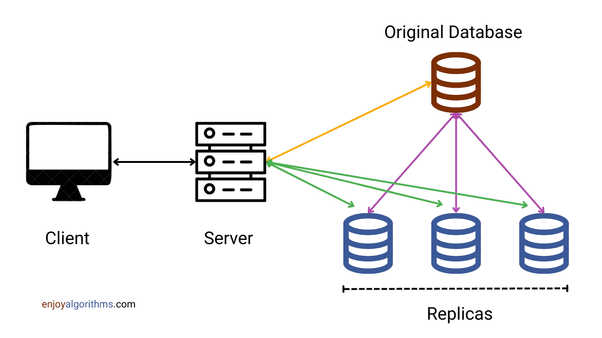
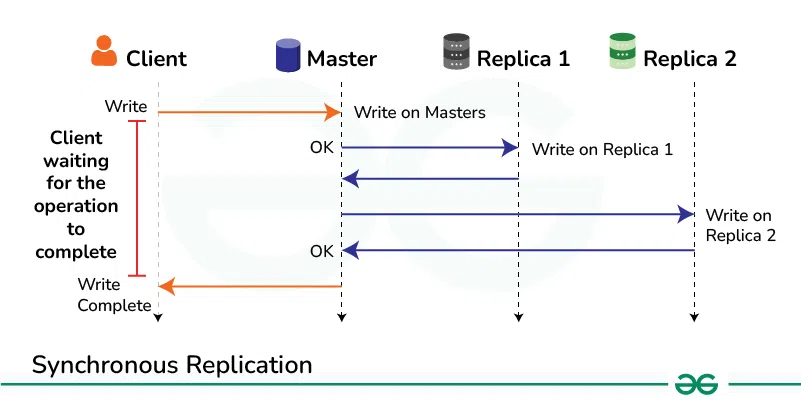
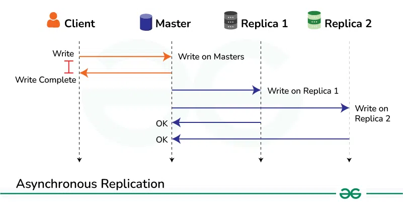
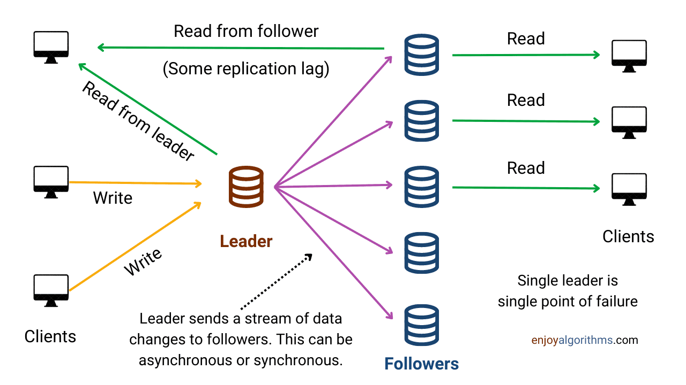
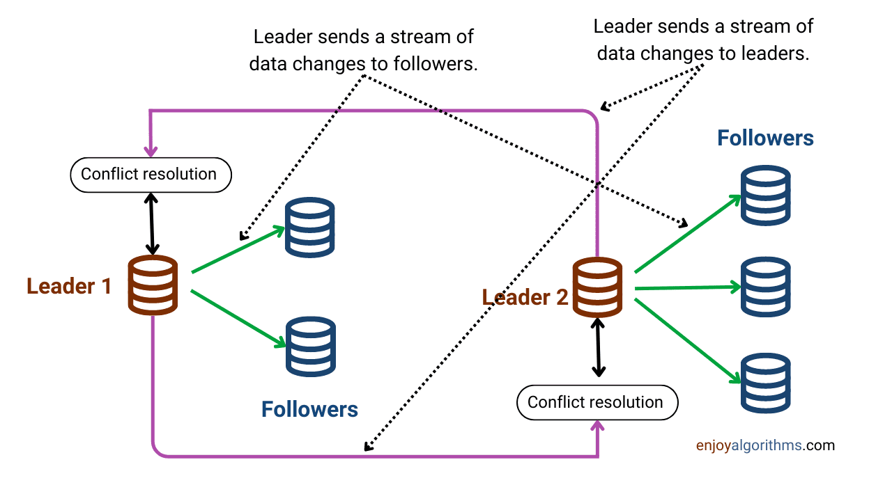
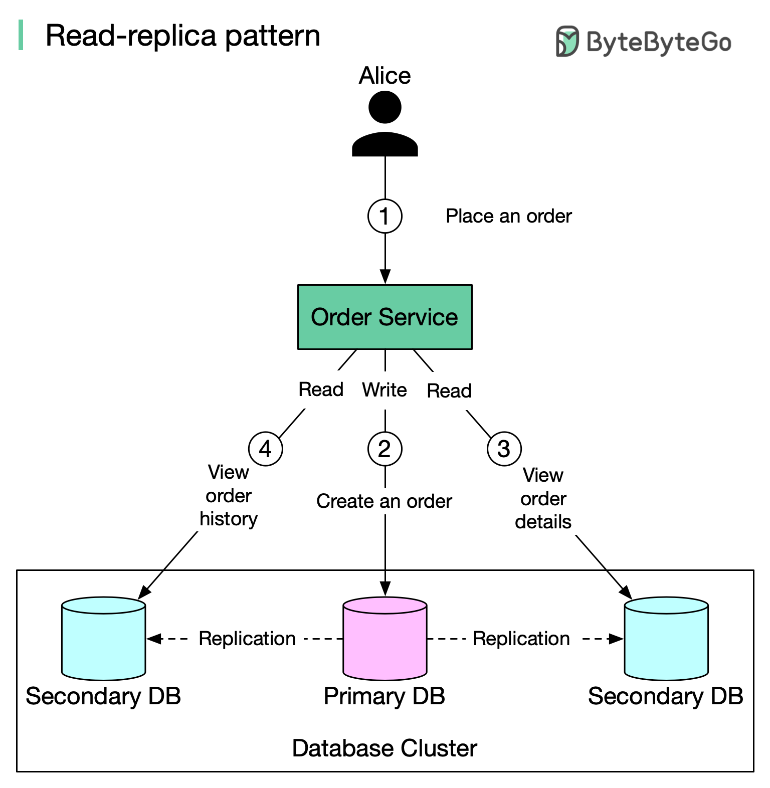
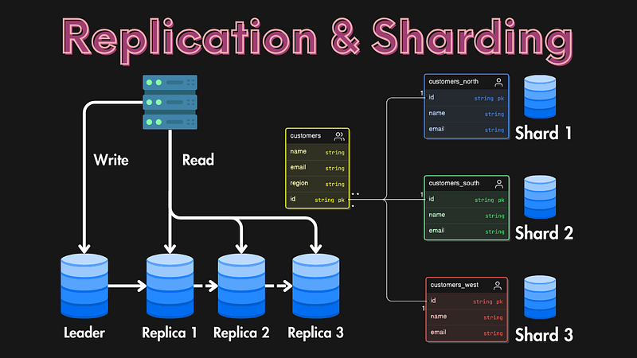

System Design Mastery
Master scalable systems with premium insights
📂 Replication — Data Redundancy for Availability & Performance
1️⃣ What is it?
Replication means copying data from one database (primary) to one or more replicas.
In simple words:
👉 Same data stored in multiple places
Typical flow:
Write → Primary DB
↓
Replicas (copies)
- Primary handles writes
- Replicas often serve reads

Replication Architecture Diagram
2️⃣ Why does it exist? (What problem does it solve?)
Replication is used to:
- Scale reads (more users can query in parallel)
- Improve availability (if one node fails, others serve)
- Enable disaster recovery (copies in other zones/regions)
3️⃣ What breaks without it?
Without replication:
- Single DB becomes a bottleneck
- Downtime if that DB fails
- No easy failover or backup
- Limited read throughput
Example:
All traffic → One DB → Overloaded ❌
4️⃣ Real-world analogy
Photocopies of a document 📄
- Original = Primary
- Copies = Replicas
- If one copy is lost, others still exist
5️⃣ Types of Replication
🔹 Synchronous Replication
Primary waits for replicas to confirm write
Use when:
Banking, payments (critical data)

Advantages
- ✔ Strong consistency
- ✔ No data loss
Disadvantages
- ❌ Slower (waits for replicas)
- ❌ Higher latency
🔹 Asynchronous Replication
Primary doesn't wait for replicas to confirm write
Possible replication lag
Use when:
Social media, feeds, analytics

Advantages
- ✔ Faster writes
- ✔ Better performance
Disadvantages
- ❌ Possible data loss
- ❌ Temporary inconsistency
🔹 Replication Models
1️⃣ Master–Slave Replication
One primary (master) handles all writes, and one or more replicas (slaves) serve read
Example
Primary DB → user updated
Replica DB → gets update later
Write → goes only to primary
Read → can go to replicas
Used in:
MySQL, PostgreSQL

2️⃣ Multi-Master Replication
Multiple databases act as masters, and all can handle reads AND writes.
Flow
DB1 ↔ DB2 ↔ DB3
(all sync with each other)
Every node:
- Accepts writes
- Shares updates with others
Example
User writes to DB1
→ Syncs to DB2 and DB3
User writes to DB2
→ Syncs to DB1 and DB3

Advantages
- ✔ High availability
- ✔ No single point of failure
Disadvantages
- ❌ Conflict resolution needed
6️⃣ Key concept: Replication Lag
Replicas may be slightly behind the primary.
Replication lag is the delay between when data is written to the primary
database and when it appears on the replica.
In simple words:
👉 Primary updated now
👉 Replica updated later
That delay = replication lag
Example:
Primary updated → Replica updated after 2 seconds
👉 Users may see stale data temporarily
7️⃣ Real app connection
🛒 E-commerce
Product browsing → Replicas
Order placement → Primary
💬 Social Media
Feed reads → Replicas
Posting → Primary
💳 Banking
Often uses synchronous replication for accuracy

Replication Pattern in Real Applications
8️⃣ When to use / When NOT to use
✅ Use Replication:
- Read-heavy systems
- High availability requirements
- Large-scale applications
❌ Avoid when:
- Very small applications
- Low traffic
- Simple systems
9️⃣ One common mistake
🚨 Ignoring replication lag
Design systems to handle:
- Slightly outdated data
- Eventual consistency
🔟 Replication vs Sharding

Replication vs Sharding Comparison
⚡ Important Insight
👉 Replication is actually a type of redundancy (data redundancy)
But:
- Redundancy is broader concept
- Replication is specific to data
Redundancy means having extra components (ready to use backup systems which are running background) so that if one fails, another can take over.
🎯 Interview-ready one-liner
Replication means creating and maintaining copies of data across multiple servers to improve availability, fault tolerance, and read scalability.
🧠 3-line quick summary
- Replication creates multiple copies of data across servers to improve availability and performance.
- Writes go to the primary, while replicas often handle read traffic.
- It introduces replication lag, so systems must handle eventual consistency.